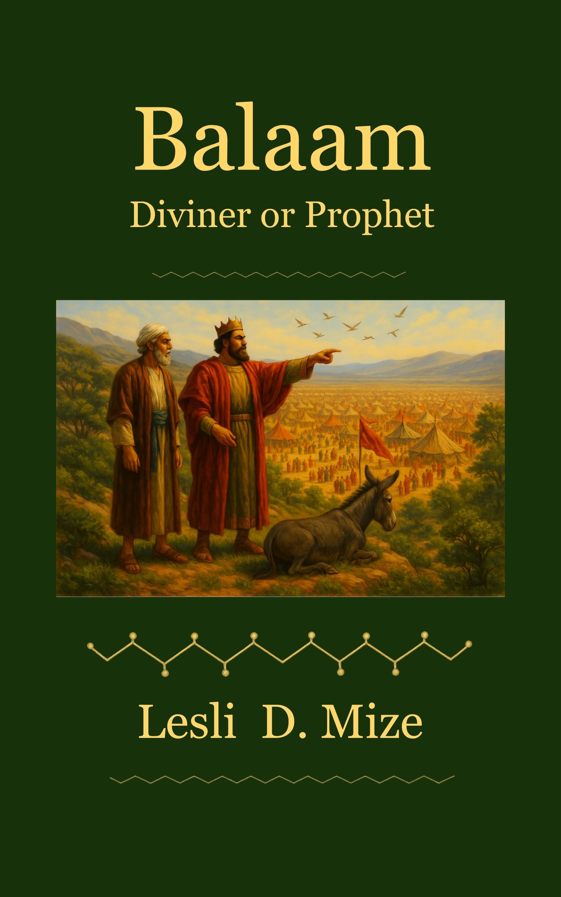

The Story of Balaam
A sobering biblical message on compromise, deception, and the sovereignty of God.
- Biblical message on discernment and obedience
- Exposes the danger of spiritual compromise
- Rooted in Numbers 22-31

Scripture-rooted studies designed to build discernment, strengthen doctrine, and encourage true discipleship.
View All on Amazon
A sobering biblical message on compromise, deception, and the sovereignty of God.

A faith-building book that calls believers to trust God when His answers challenge expectations and test their faith.

A gospel-centered message that confronts life's most important question and points to the truth found in Christ.
Additional Bible studies, teaching resources, and devotionals from Balancing the Word Ministry are currently in development and will be released soon.